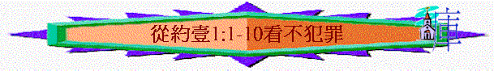

不犯罪的生命
經文:約壹1:1-10
引言:
本書的作者是誰?1:6 提及與神相交,你認為一個信徒若說他近來與神關係是十分好,與神有好的相交,即代表他有什麼表現?
1:1-10提及真正與神相交應有的生命果效與特質
一. 與神相交的根源(1:1-4)
1. 1:1-2提及生命之道,這生命之道是指誰? 從起初原有的是什麼意? 不是被造,太初已有 祂又有什麼特質? 是約翰和其他信徒親眼、親耳、親手接觸過,不是假,不是幻影的 若有人說耶穌是虛構出來的人物,是不真實的,你如何回應?
2.1:1-2又提及生命,這生命和普通人的生命有什麼不同的地方? 可傳的,永遠的,人可領受的
3.今天我們見不到主,又如可向人表明主/信仰的真實?
4.1:3我們得著這生命之道後, 我們可以與誰相交? 為何要有生命之道,信徒才可有真正相交? 你認為我們與未信的人及信的人在交往中,有什麼分別?
5.1:4 作者寫此書的目的是什麼? 何謂喜樂充足? 信徒在什麼情況下可以沒有喜樂或會感憂愁? 懷疑自己沒永生, 與神與人沒好關係 犯罪
二.與神相交與不犯罪的關係(1:5-10)
1.1:5提及神是什麼? 有什麼特點? 何謂黑暗?
2.1:6,1:8,1:10 有什麼共通的地方?此段有三個「若說」字眼，是他們有一些錯誤的觀念/表現，所以作者要糾正他們，他們的錯誤
3.第一個若說是什麼事情(1:6-7)? 1:6有什麼錯誤的觀念/表現? 錯在那裡?
4.有這樣的觀念的人就是怎樣? 你有沒有見過一些信徒,他表面上與神有好的關係,但卻時常犯罪的?
5.1:7A 要我們如何行? 在光明中行如同神在光明中
6.第二個若說是什麼事情(1:8)? 有什麼錯誤的觀念/表現?錯在那裡? 有這樣的觀念的人就是怎樣? 1:6提及說謊話,1:8提及自欺,有什麼分別?
7.有沒有見過一些人說自己沒罪的?
8.1:9鼓勵我們什麼事情? 是對未信的人說,還是對信的人說的?
9.1:9提及神的公義與信實,與神必赦免人的罪有什麼關係?
10.第三個若說是什麼事情(1:10)? 有什麼錯誤的觀念/表現?錯在那裡? 說「自己無罪」及「沒有犯過罪」有什麼分別?有這樣觀念的人就是怎樣?
11.1:6提及說謊話,1:8提及自欺,1:10提及以神為說謊又有什麼分別? 那個更嚴重?
12.之前說1:6「不行真理」1:8「真理不在我們心裏了」，今次1:10說「祂的道也不在我們心裏了」,真理與神的道有什麼分別? 那個更廣闊?
今次加深「祂的道也不在我們心裏了」比真理更廣闊，因神的道可指神的話，而神也是道，他連神自己也不在心裡，因他心中沒神，否定神的說話，藐視祂的法則
13.若你今天發現一個信徒犯了罪,但他不承認,也不覺有問題,你又如何幫助他?
今次查經對我們有什麼幫助/分享你的領受